Plage formantique : 162–2 358 Hz (voyelles /u/ → /i/).
Caractéristique : formants bien définis, grande stabilité inter-dynamiques (sauf trompette). Le cluster de convergence 450–502 Hz (zone /o/) rassemble Cor, Trombone, Basson, Violoncelle, Cor anglais et Saxophone ténor — fondement acoustique des doublures classiques.
Source unique : toutes les valeurs proviennent du CSV formants_all_techniques.csv,
extrait par le script v22 (extract_formants_all_techniques_v2_fixed.py) à partir des specenv SOL2020/Yan_Adds.
Pipeline validé : 16/16 instruments reproduits à Δ=0 Hz.
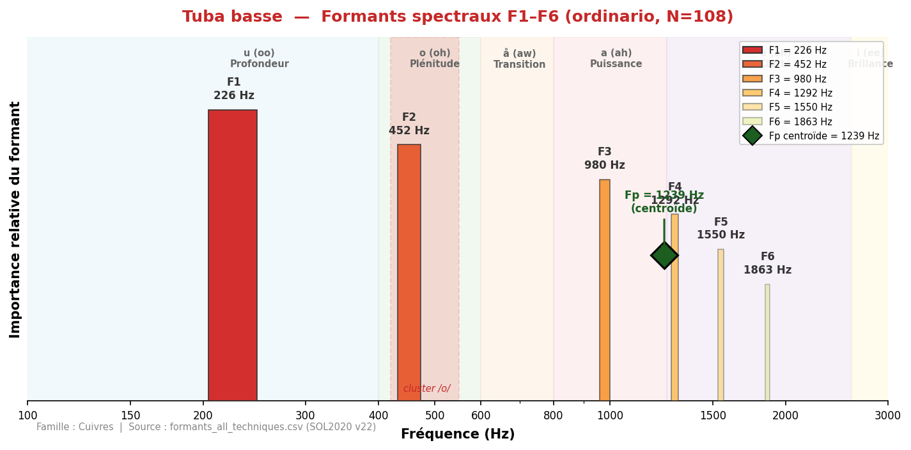
Son profond et rond, fondamental de l'orchestre. Formants très graves (F1=226 Hz, voyelle /u/), le tuba basse ancre le registre grave avec une couleur sombre et enveloppante.
Fp centroïde = 1239 Hz
| Technique | N | F1 | F2 | F3 | F4 | F5 | F6 |
|---|---|---|---|---|---|---|---|
| bisbigliando | 36 | 215 | 431 | 958 | — | — | — |
| blow | 1 | 194 | 538 | 1 174 | 1 572 | — | — |
| brassy | 3 | 291 | 592 | 883 | 1 184 | 1 475 | 1 766 |
| breath | 1 | 183 | 797 | 1 184 | 1 486 | 2 024 | 4 877 |
| buzz | 4 | 312 | 958 | 1 195 | 1 260 | 1 561 | 1 863 |
| chromatic_scale | 2 | 248 | 506 | — | — | — | — |
| crescendo | 33 | 226 | 452 | 872 | 1 238 | 1 346 | 1 755 |
| crescendo_to_decrescendo | 33 | 215 | 452 | 990 | 1 163 | 1 324 | 1 583 |
| decrescendo | 33 | 237 | 463 | 1 001 | 1 292 | 1 852 | 1 841 |
| discolored_fingering | 18 | 194 | 635 | 1 055 | 1 270 | 1 604 | 1 712 |
| discolored_fingering_quartertones | 9 | 183 | 614 | 1 130 | 1 346 | 1 669 | 1 970 |
| exploding_slap_pitched | 1 | 194 | 388 | 689 | 969 | 1 529 | — |
| exploding_slap_unpitched | 1 | 205 | 549 | 1 206 | — | — | — |
| filtered_by_voice | 1 | 291 | 829 | — | — | — | — |
| flatterzunge | 72 | 215 | 452 | 1 001 | 1 120 | — | — |
| flatterzunge_and_voice_unison | 35 | 226 | 452 | 969 | 1 130 | — | — |
| flatterzunge_to_ordinario | 33 | 215 | 463 | 990 | 1 174 | — | — |
| glissando | 30 | 215 | 431 | 743 | 1 066 | — | — |
| growl | 2 | 334 | 1 227 | 1 249 | — | — | — |
| inhaled | 1 | 754 | 894 | 1 357 | 2 013 | 2 315 | 2 595 |
| kiss | 1 | 302 | 614 | 958 | — | — | — |
| multiphonics | 3 | 215 | 452 | — | — | — | — |
| ordinario | 108 | 226 | 452 | 980 | 1 292 | 1 550 | 1 863 |
| ordinario_high_register | 15 | 431 | 786 | 1 260 | 1 658 | 1 970 | 2 627 |
| ordinario_quartertones | 35 | 215 | 431 | 980 | — | — | — |
| ordinario_to_flatterzunge | 33 | 215 | 452 | 1 001 | 1 270 | — | — |
| pedal_tone | 30 | 205 | 441 | 980 | 1 270 | 1 529 | — |
| percussion_embouchure | 1 | 226 | — | — | — | — | — |
| play_and_sing_aug_forth_up | 5 | 226 | 431 | 1 066 | 1 378 | — | — |
| play_and_sing_fifth_up | 5 | 215 | 452 | 872 | 1 163 | — | — |
| play_and_sing_glissando | 1 | 226 | — | — | — | — | — |
| play_and_sing_maj_seventh_up | 5 | 237 | 495 | 1 249 | — | — | — |
| play_and_sing_min_second_up | 4 | 302 | 441 | 883 | — | — | — |
| play_and_sing_unison | 21 | 237 | 452 | 969 | 1 249 | 1 540 | — |
| sforzato | 33 | 226 | 452 | 1 012 | 1 292 | 1 572 | 1 787 |
| single_tonguing | 36 | 215 | 441 | 990 | — | — | — |
| slap_pitched | 33 | 205 | 646 | 732 | 1 001 | 1 281 | — |
| slap_unpitched | 9 | 215 | 538 | 711 | 1 077 | 1 270 | — |
| speak_into_instrument | 7 | 226 | 549 | 1 174 | 1 464 | 1 841 | 2 164 |
| staccato | 66 | 215 | 452 | 1 001 | 1 281 | 1 475 | 1 561 |
| trill_major_second_up | 36 | 215 | 431 | 840 | — | — | — |
| trill_minor_second_up | 36 | 215 | 431 | 851 | — | — | — |
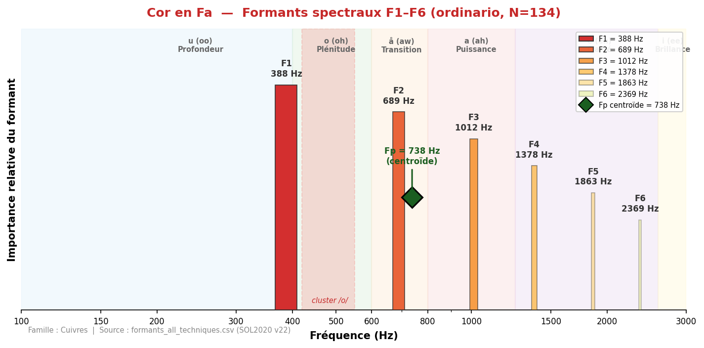
Son rond et chaleureux, emblématique de la noblesse orchestrale. F1=388 Hz dans la zone /o/ (plénitude). Le cor possède le spectre le plus homogène des cuivres, avec un Fp centroïde à 738 Hz.
Fp centroïde = 738 Hz
| Technique | N | F1 | F2 | F3 | F4 | F5 | F6 |
|---|---|---|---|---|---|---|---|
| brassy | 43 | 474 | 754 | 1 863 | 2 218 | 3 144 | 3 962 |
| brassy_to_ordinario | 10 | 474 | 764 | 1 680 | 2 218 | 2 778 | 3 338 |
| chromatic_scale | 2 | 517 | 1 260 | — | — | — | — |
| crescendo | 45 | 463 | 743 | 1 841 | 2 455 | 2 896 | 3 790 |
| crescendo_to_decrescendo | 45 | 409 | 732 | 1 120 | 1 669 | 1 949 | 2 315 |
| decrescendo | 41 | 463 | 754 | 2 110 | 2 498 | 3 488 | 4 080 |
| flatterzunge | 111 | 441 | 818 | 1 270 | 1 636 | 1 970 | 2 326 |
| flatterzunge_stopped | 42 | 344 | 711 | 1 130 | 2 229 | 2 519 | 2 853 |
| flatterzunge_to_ordinario | 41 | 441 | 851 | 1 238 | 1 626 | 2 067 | 2 379 |
| note_lasting | 46 | 431 | 743 | 1 109 | 1 669 | 1 852 | 2 390 |
| open_to_stopped | 24 | 398 | 700 | 1 130 | 1 744 | 2 767 | — |
| ordinario | 134 | 388 | 689 | 1 012 | 1 378 | 1 863 | 2 369 |
| ordinario_to_brassy | 44 | 463 | 764 | 1 658 | 2 735 | 3 531 | 4 823 |
| ordinario_to_flatterzunge | 41 | 441 | 732 | 1 087 | 1 389 | 1 830 | — |
| sforzato | 86 | 463 | 754 | 1 163 | 1 809 | 2 153 | 2 530 |
| slap_pitched | 44 | 452 | 743 | 1 098 | 1 809 | 1 852 | 2 207 |
| staccato | 41 | 463 | 732 | 1 152 | 1 583 | 1 863 | 2 218 |
| stopped | 42 | 355 | 689 | 1 120 | 2 455 | 2 810 | 3 488 |
| stopped_to_open | 23 | 431 | 732 | 1 098 | 1 658 | 2 627 | — |
| trill_major_second_up | 16 | 452 | 861 | 1 066 | 1 303 | — | — |
| trill_minor_second_up | 40 | 409 | 689 | 1 055 | 1 324 | 1 389 | — |
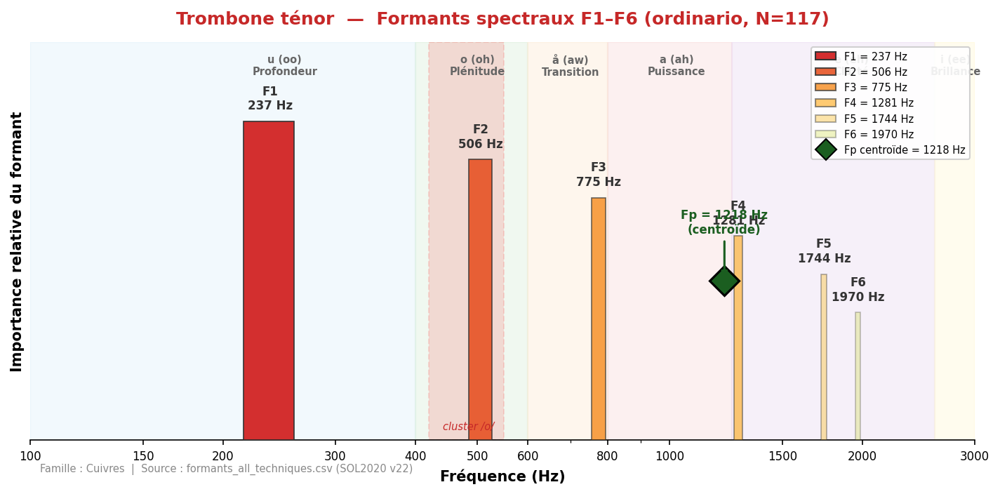
Son plein et puissant, grande projection. F1=237 Hz (zone /u/) avec un Fp centroïde à 1218 Hz. Le trombone couvre un large spectre, du grave profond au medium brillant.
Fp centroïde = 1218 Hz
| Technique | N | F1 | F2 | F3 | F4 | F5 | F6 |
|---|---|---|---|---|---|---|---|
| brassy | 31 | 495 | 786 | 1 270 | 1 561 | 1 863 | 2 358 |
| brassy_to_ordinario | 8 | 484 | 786 | 1 260 | 1 561 | 1 884 | 2 638 |
| chromatic_scale | 1 | 226 | 484 | 775 | 1 001 | 1 572 | — |
| crescendo | 33 | 226 | 506 | 808 | 1 281 | 1 809 | 2 175 |
| crescendo_to_decrescendo | 37 | 226 | 495 | 764 | 1 475 | 1 776 | 2 121 |
| decrescendo | 33 | 495 | 775 | 1 109 | 1 400 | 1 820 | 2 143 |
| flatterzunge | 105 | 237 | 517 | 786 | 1 292 | 1 604 | 2 100 |
| flatterzunge_no_mouthpiece | 4 | 592 | 1 174 | 1 755 | 2 218 | 2 896 | 3 338 |
| flatterzunge_to_ordinario | 33 | 226 | 517 | 775 | 1 292 | 1 636 | 1 970 |
| glissando | 30 | 215 | 484 | 743 | 1 270 | 1 281 | — |
| note_lasting | 34 | 226 | 495 | 786 | 1 314 | 1 647 | 2 100 |
| ordinario | 117 | 237 | 506 | 775 | 1 281 | 1 744 | 1 970 |
| ordinario_no_mouthpiece | 10 | 624 | 915 | 1 249 | 1 636 | 1 960 | 2 627 |
| ordinario_to_brassy | 29 | 495 | 797 | 1 238 | 1 561 | 1 852 | 2 401 |
| ordinario_to_flatterzunge | 29 | 215 | 506 | 764 | 1 303 | 1 561 | 1 863 |
| pedal_tone | 22 | 237 | 495 | 743 | 1 260 | 1 550 | 2 132 |
| sforzato | 66 | 484 | 764 | 1 077 | 1 464 | 1 830 | 2 175 |
| slap_pitched | 12 | 194 | 506 | 764 | 1 314 | 2 132 | 2 153 |
| staccato | 37 | 226 | 495 | 775 | 1 292 | 1 863 | 2 175 |
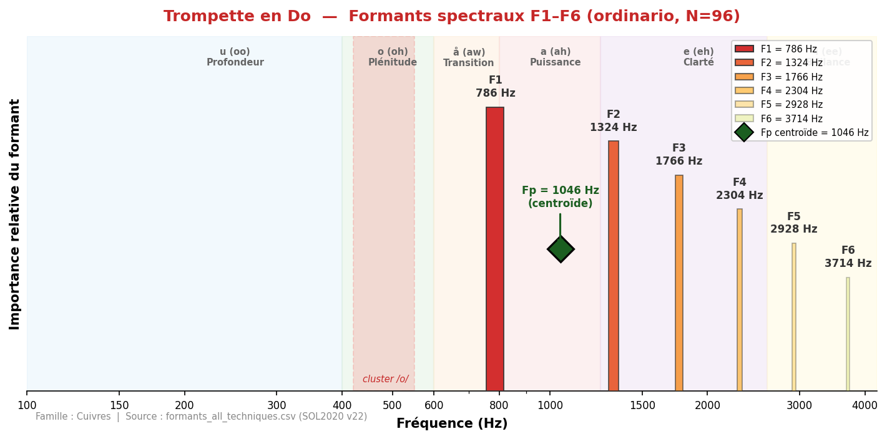
Son brillant et incisif, grande projection. F1=786 Hz dans la zone /a/ (puissance). Le Fp centroïde à 1046 Hz est remarquablement stable (σ=98 Hz) malgré la très forte variabilité de F2 (σ=1018 Hz).
Fp centroïde = 1046 Hz
| Technique | N | F1 | F2 | F3 | F4 | F5 | F6 |
|---|---|---|---|---|---|---|---|
| brassy | 31 | 1 766 | 2 939 | 3 768 | 4 382 | 4 985 | 5 599 |
| brassy_to_ordinario | 7 | 2 121 | 2 832 | 3 542 | 4 404 | 4 963 | 5 480 |
| crescendo | 26 | 2 476 | 3 305 | 3 930 | 4 425 | 5 125 | 5 696 |
| crescendo_to_decrescendo | 26 | 624 | 1 034 | 1 389 | 1 841 | 2 207 | 2 638 |
| decrescendo | 29 | 2 638 | 3 531 | 4 027 | 4 393 | 5 050 | 5 642 |
| flatterzunge | 90 | 797 | 1 314 | 1 755 | 2 336 | 2 928 | 3 510 |
| flatterzunge_to_ordinario | 22 | 711 | 1 087 | 1 432 | 1 852 | 2 218 | 2 649 |
| glissando_embouchure | 1 | 452 | 1 034 | 1 357 | 2 089 | 2 433 | 3 122 |
| half_valve_glissando | 27 | 754 | 1 486 | 2 186 | 2 907 | 3 639 | 4 382 |
| harmonics_glissando | 9 | 926 | 1 583 | 1 938 | 2 444 | 2 821 | 4 145 |
| increasing_intervals_legato | 2 | 388 | 668 | 1 012 | 1 540 | 1 895 | 2 067 |
| note_lasting | 33 | 624 | 1 120 | 1 594 | 1 992 | 2 466 | 2 961 |
| ordinario | 96 | 786 | 1 324 | 1 766 | 2 304 | 2 928 | 3 714 |
| ordinario_to_brassy | 14 | 1 658 | 2 498 | 3 488 | 4 188 | 4 953 | 5 706 |
| ordinario_to_flatterzunge | 30 | 775 | 1 260 | 1 776 | 2 240 | 2 788 | 3 284 |
| pedal_tone | 6 | 506 | 797 | 1 098 | 1 346 | 1 712 | 2 229 |
| sforzato | 58 | 851 | 1 378 | 1 863 | 2 347 | 2 982 | 4 317 |
| slap_pitched | 18 | 302 | 764 | 1 109 | 1 454 | 1 884 | 2 466 |
| staccato | 29 | 840 | 1 389 | 1 970 | 2 487 | 3 112 | 3 714 |
| trill_major_second_up | 18 | 398 | 743 | 1 055 | 1 410 | 1 787 | 2 186 |
| trill_minor_second_up | 31 | 538 | 969 | 1 367 | 1 830 | 2 282 | 2 401 |
| vocalize_on_harmonics | 2 | 377 | 689 | 1 087 | 1 410 | 1 906 | 2 218 |
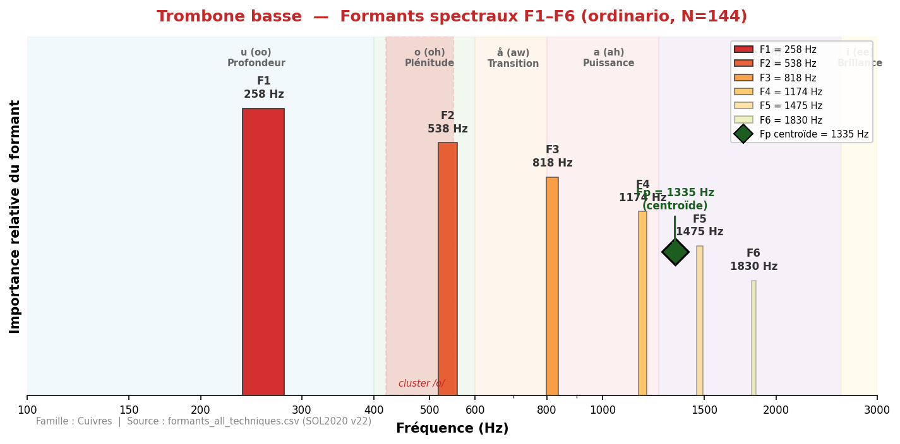
Son profond et puissant, plus sombre que le ténor. F1=258 Hz (zone /u/), Fp=1335 Hz. Le trombone basse élargit l'assise grave de la section cuivres.
Fp centroïde = 1335 Hz
| Technique | N | F1 | F2 | F3 | F4 | F5 | F6 |
|---|---|---|---|---|---|---|---|
| ordinario | 144 | 258 | 538 | 818 | 1 174 | 1 475 | 1 830 |
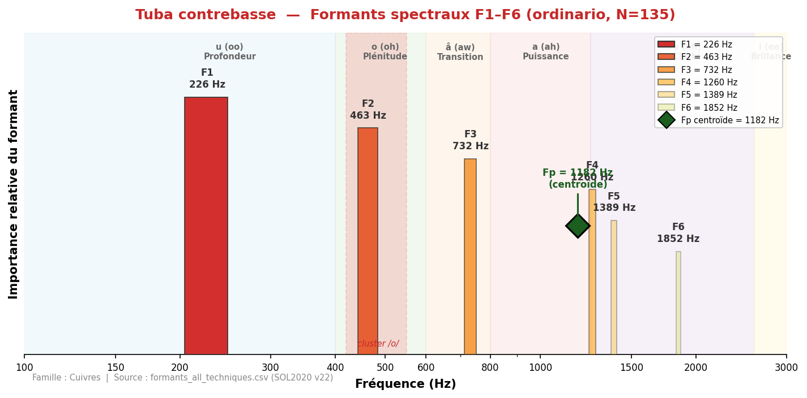
Son extrêmement grave et massif. F1=226 Hz identique au tuba basse, mais F2=463 Hz confirme sa place dans le cluster 450-502 Hz.
Fp centroïde = 1182 Hz
| Technique | N | F1 | F2 | F3 | F4 | F5 | F6 |
|---|---|---|---|---|---|---|---|
| flatterzunge | 32 | 215 | 463 | 721 | 1 023 | 1 432 | 1 561 |
| ordinario | 135 | 226 | 463 | 732 | 1 260 | 1 389 | 1 852 |
Les sourdines modifient profondément le spectre formantique des cuivres. L'effet varie considérablement selon le type de sourdine : la cup atténue les aigus (son feutré), la straight renforce les médiums (son nasal), la harmon concentre l'énergie (son « jazz »), et la wah permet un contrôle dynamique ouvert/fermé.
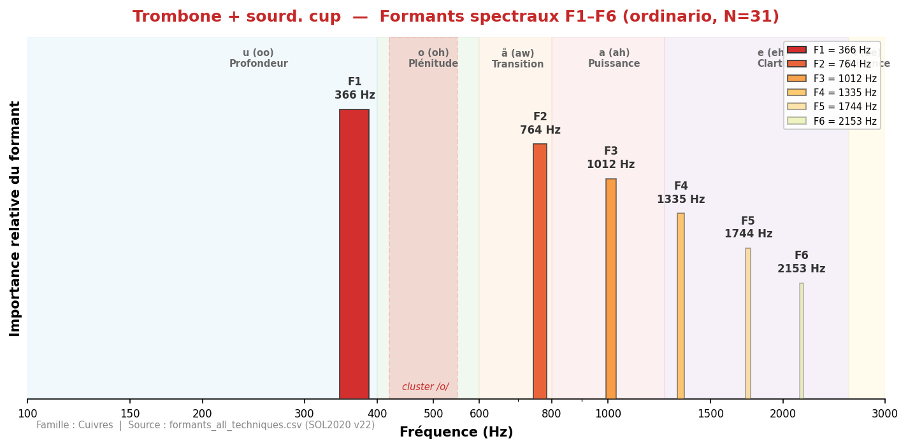
Son voilé et sombre, projection réduite. La sourdine cup absorbe les harmoniques aigus, produisant un timbre mat et feutré.
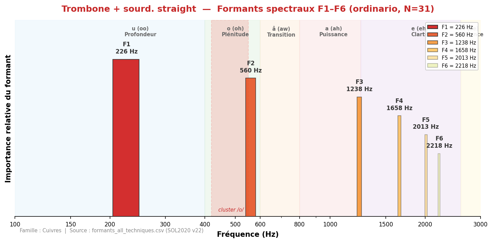
Son nasal et métallique. La sourdine straight comprime le spectre et renforce la zone 800–1500 Hz, donnant un caractère incisif.
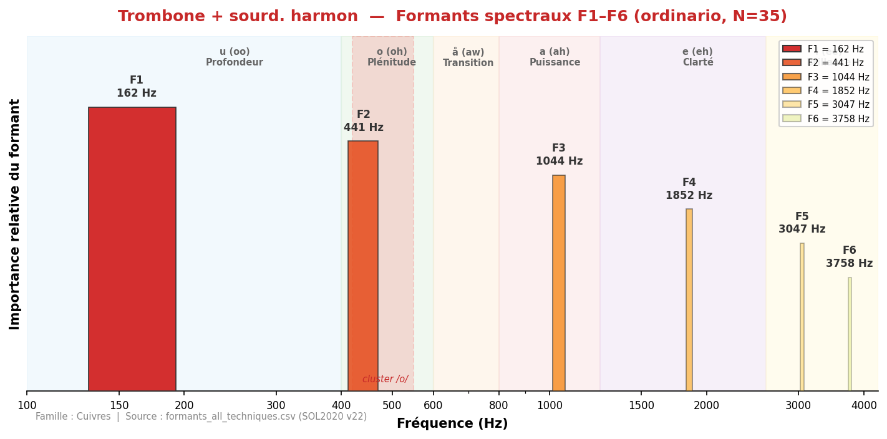
Son très concentré, quasi sinusoïdal dans le grave (F1=162 Hz). Timbre « de jazz » intime, projection très directionnelle.
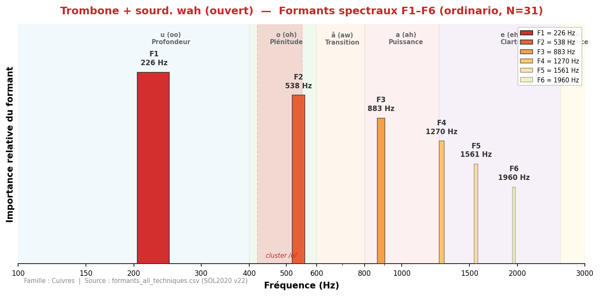
Position ouverte : son brillant et nasal, spectre riche. F1=226 Hz, caractère expressif.
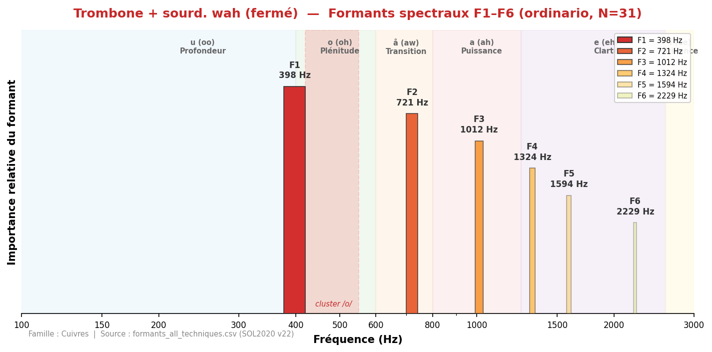
Position fermée : son très étouffé et nasal. F1 remonte à 398 Hz, les formants sont comprimés.
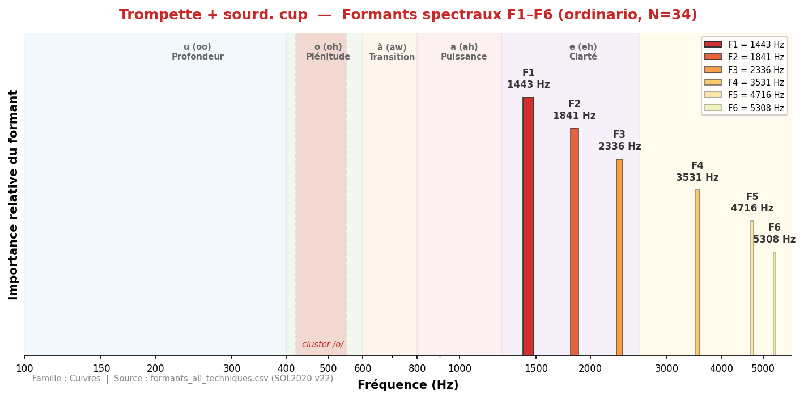
Son doux et arrondi, perd la brillance caractéristique. F1=1443 Hz, timbre proche du bugle.
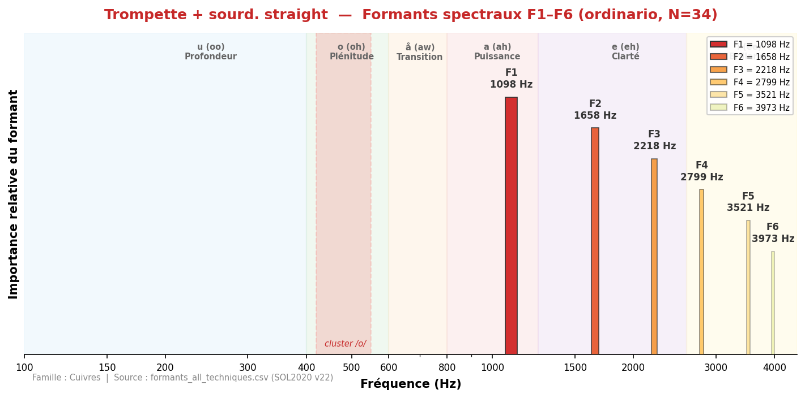
Son piquant et nasal, le plus utilisé en orchestre. F1=1098 Hz, caractère « pointu » et projeté.
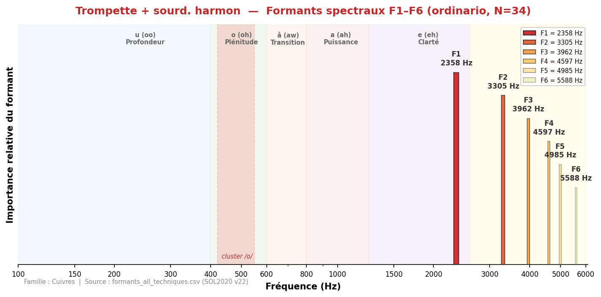
Son « miles-davisien ». F1=2358 Hz, tout le spectre propulsé dans les aigus. Timbre très intime.
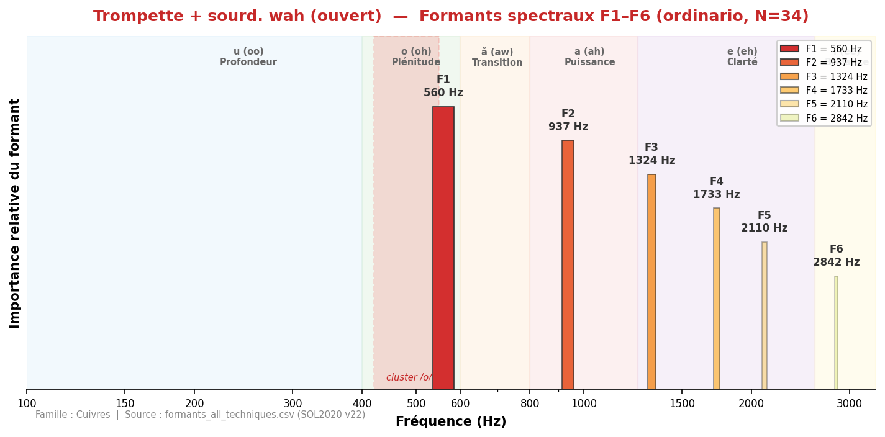
Tige insérée, position ouverte : son nasal et brillant. F1=560 Hz, plus de projection que fermé.
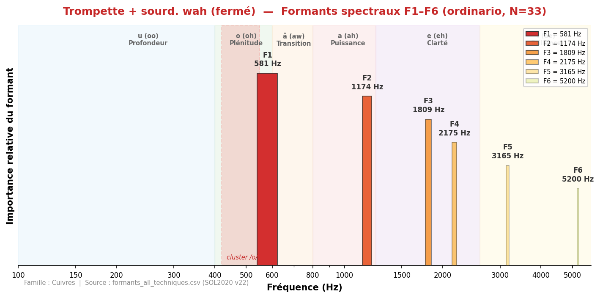
Tige insérée, position fermée : son très étouffé. F1=581 Hz, spectre fortement filtré.
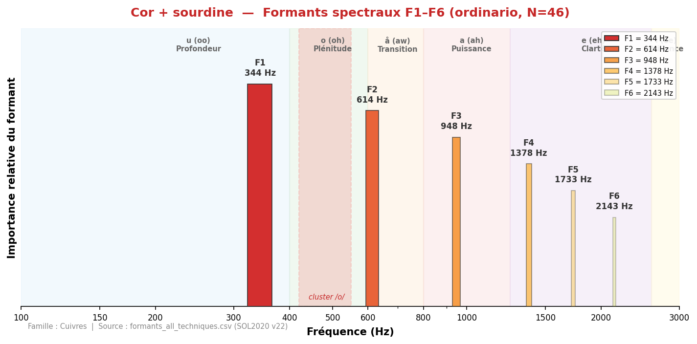
Son voilé et lointain. F1 descend de 388 à 344 Hz, la sourdine déplace les formants vers le grave avec une légère nasalité.
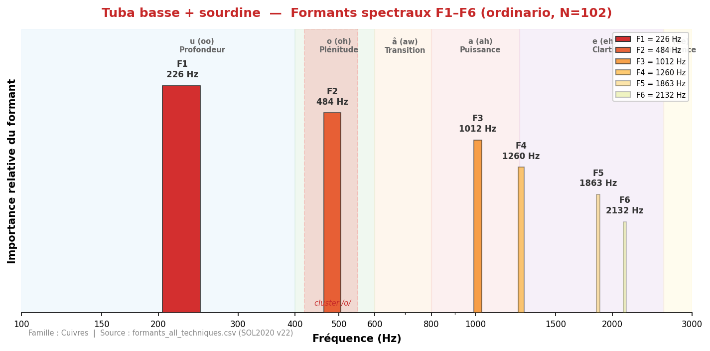
Son assourdi et compact. F1 reste à 226 Hz mais la projection est réduite. Timbre plus mat.
Source des données : formants_all_techniques.csv — pipeline v22 validé (Δ=0 Hz pour 16/16 instruments CSV).
Méthode : peak-picking sur enveloppes spectrales (seuil -30 dB, distance min 70 Hz, 6 formants max), agrégation par médiane.
Fp : centroïde spectral pondéré en énergie dans une bande optimisée par instrument.
Échantillons : SOL2020 (IRCAM) + Yan_Adds — technique ordinario uniquement sauf mention contraire.